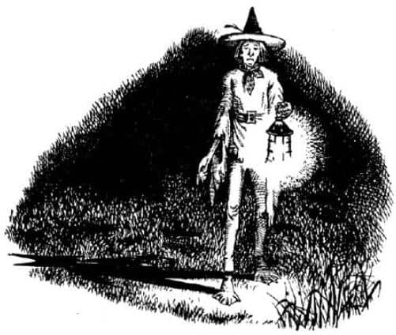
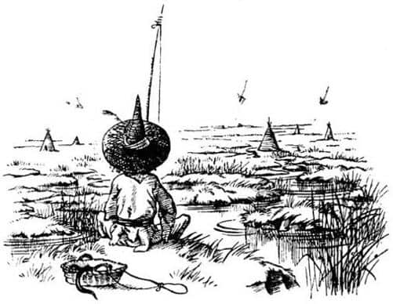
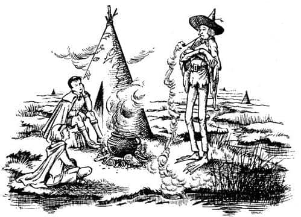

Suratsız
Jill uyuyordu. Baykuşlar meclisi başladığından beri esnemiş ve sonunda uyuyakalmıştı. Tekrar uyandırılmaktan ve kendisini tozlu bir çan kulesine benzeyen, kapkaranlık ve baykuşlarla dolu bir yerde tahtalar üzerinde yatıyor bulmaktan hiç hoşlanmamıştı. Aslında, baykuşların sırtına binip, yatak odalarına değil de başka bir yere gideceklerini duymak daha da bozmuştu moralini.
“Ah Pole hadi, sevinmelisin” dedi Scrubb. “İşte sana macera.”
“Maceralardan bıktım” dedi Jill tersleyerek.
Sonunda Pasparlak’ın sırtına tırmanmaya razı oldu ve Baykuş’un sırtında gecenin karanlığına uçtuğunda, havanın beklenmedik serinliği (bir süre için) tamamen ayılmasına neden oldu. Ay kaybolmuştu, yıldızlar görünmüyordu. Arkasında, çok uzaklarda, yerden oldukça yüksekte ışıklı bir pencere görebiliyordu; kuşkusuz Cair Paravel’in kulelerinden biriydi bu. O harika yatak odasına geri dönmüş, sıcacık yatağında kıvrılmış, ateşin duvarlardaki yansımasını seyrediyor olmayı arzuladı. Pelerini vücuduna sımsıkı sardı ve ellerini de pelerinin içine soktu. Karanlığın içinden sesler duymak tuhaftı. Scrubb ve Baykuş birbirleriyle konuşuyordu. “Yorgun görünmüyor” diye düşündü Jill. Onun daha önce bu dünyada muhteşem maceralar yaşadığını ve Narnia havasının, Kral Caspian’la doğu denizlerinde yelken açtıklarında kazandığı gücü ona geri getirdiğini bilmiyordu.
Jill uyumamak için kendisini çimdiklemek zorunda kalıyordu; Pasparlak’ın sırtında uyursa büyük olasılıkla düşeceğini biliyordu. İki baykuş yere konduğunda, Pasparlak’ın sırtından indi ve kendini düz bir alanda buldu; kaskatı kesilmişti. Soğuk bir rüzgâr esiyordu ve bu ağaçsız bir yere geldiklerinin işaretiydi. “Pu-huuu, pu-huuu!” Pasparlak çağırıyordu. “Uyan, Suratsız. Uyan. Aslan’la ilgili.”
Uzun süre cevap veren olmadı. Sonra zayıf bir ışık göründü ve giderek yaklaşmaya başladı. Bununla birlikte bir ses duyuldu.
“Hey baykuşlar!” dedi. “Ne var? Kral mı öldü? Düşmanlar Narnia’ya mı çıktılar? Sel mi bastı? Yoksa ejderhalar mı saldırdı?”
Işık yaklaştığında bunun büyük bir kandil olduğu anlaşıldı. Jill kandili taşıyan kişiyi hayal meyal görebiliyordu. Sanki sadece kollar ve bacaklardan oluşuyordu. Baykuşlar onunla konuşuyor, her şeyi açıklıyorlardı, ama Jill dinleyemeyecek kadar yorgundu. Baykuşların elveda dediğini duyduğunda kendine gelmeye çalıştı. Tek hatırladığı, Scrubb’la beraber alçak bir kapıdan girmek için eğildiği (ve neyse ki) yumuşak ve ılık bir şeyin üzerine uzandıklarıydı.

“İşte. Elimden gelen bu. Soğuk ve sert bir yerde yatacaksınız. Üstelik ıslaksa şaşmam. Bir fırtına ya da bir sel olmasa veya kulübe, daha önce olduğu gibi üstümüze yıkılmasa bile, muhtemelen gözünüzü kırpamayacaksınız. Hadi bakalım, kolay gelsin” diyen ses, uyuyakalmadan önce duyduğu son şeydi.
Çocuklar ertesi sabah geç vakitte uyandıklarında karanlık bir yerde, kupkuru ve sıcak saman yataklarda yattıklarını gördüler. Üçgen şeklinde bir açıklıktan günışığı sızıyordu.
“Neredeyiz Tanrı aşkına?” diye sordu Jill.
“Bir Kıllıkıpırdak’ın kulübesinde” dedi Eustace.
“Neyin?”
“Kıllıkıpırdak’ın. Bana ne olduğunu sorma. Dün gece göremedim. Ben kalkıyorum. Gidip onu bulalım.”
“Elbiseleriyle uyuyunca insan kendini ne kadar da kötü hissediyor” dedi Jill, oturarak.
“Ben de giyinmek zorunda kalmamanın ne kadar güzel olduğunu düşünüyordum” dedi Eustace.
“Ya da yıkanmak zorunda olmamanın” dedi Jill küçümseyerek. Scrubb şimdiden kalkmış, esnemiş, gerinmiş ve sürünerek kulübeden dışarıya çıkmıştı. Jill de aynısını yaptı.
Dışarıda onları bekleyen dünya, bir gün önce gördükleri Narnia’dan oldukça farklıydı. Sayısız su kanallarıyla küçük adacıklara bölünmüş büyük ve düz bir ovadaydılar. Adalar yabani otlarla, kenarları da sazlık ve hasırotlarıyla kaplıydı. Bazen geniş hasırotu yatakları görmek mümkündü. İçlerine sürekli kuş sürüleri – ördekler, çulluklar, balabanlar, balıkçıllar – konuyor ve kalkıyordu. Etraflarında, geceyi geçirdikleri kulübeye benzeyen bir sürü kulübe vardı, ama kulübeler birbirinden oldukça uzaktı; çünkü Kıllıkıpırdaklar özel yaşamlarına özen gösteren yaratıklardır. Güney ve batıda, millerce uzaktaki orman hariç görünürde bir tek ağaç yoktu. Bataklık doğuda, ufuktaki alçak kum tepelerine kadar uzanıyordu; o yönden esen rüzgârın kokusundan orada deniz olduğunu anlayabiliyordunuz. Kuzeyde yer yer burçlara benzeyen alçak ve soluk renkli tepeler vardı. Geri kalan yerler boydan boya bataklıktı. Burası yağışlı akşamüzerlerinde iç karartıcı bir yer olurdu. Ama serin bir rüzgârın estiği, dört bir tarafın kuş sesleriyle dolduğu bu sabah güneşi altında, bu ıssızlığın temiz, zindelik veren hoş bir tarafı vardı. Çocuklar kendilerini daha canlı hissettiklerini fark ettiler.
“Tuzluşıpırdak nereye gitti acaba?” dedi Jill.
“Kıllıkıpırdak” dedi Scrubb, kelimeyi bildiğinden gururlanıyormuş gibi. “Sanırım – hey, bu o olmalı.” O anda ikisi de onu gördü, yaklaşık elli metre uzakta, sırtı onlara dönük oturmuş balık avlıyordu. İlk bakışta onu görmek çok zordu, çünkü bataklıkla aynı renkteydi ve kıpırdamıyordu.

“Sanırım gidip konuşsak iyi olur” dedi Jill. İkisi de biraz endişeliydi.
Yaklaştıklarında, Kıllıkıpırdak onlara döndü ve çukur yanaklı uzun ve ince bir surat; sımsıkı kapalı bir ağız, sivri bir burun ve sakalsız bir yüz gördüler. Siperliği kocaman, tepesi uzun ve minare gibi sivri bir şapka takmıştı. İri kulaklarından aşağıya dökülen saçları, eğer buna saç denebilirse, yeşile çalan gri bir renkteydi; her lülesi yuvarlak olmaktan çok yassıydı ve minik sazlıklara benziyordu. Yüzündeki ifade ciddi, cildi çamurumsuydu; yaşamı ciddiye aldığı hemen anlaşılıyordu.
“İyi sabahlar misafirler” dedi. “İyi demekle, yağmur ya da kar yağmayacağını veya ortalığın sise bürünüp gökgürültüsü duyulmayacağını söylemek istemiyorum. Sanırım uyuyamadınız.”
“Hayır, oldukça iyi uyuduk” dedi Jill. “Çok hoş bir gece geçirdik.”
“Ah” dedi Kıllıkıpırdak başını sallayarak. “Fazla iyimser olduğunuzu anlayabiliyorum. Doğru. Siz iyi yetiştirilmişsiniz, evet. Her şeye iyi tarafından bakmayı öğrenmişsiniz.”
“Lütfen, isminizi söyler misiniz?” dedi Scrubb.
“Benim ismim Suratsız. Unutsanız da fark etmez. Her zaman tekrarlayabilirim.”
Çocuklar onu ortaya alarak oturdular. Şimdi bacakları ve kollarının çok uzun olduğunu görebiliyorlardı. Vücudu bir cüceninkinden daha büyük olmamasına rağmen ayağa kalktığında hayli uzun olacağını tahmin edebiliyorlardı. Parmakları tıpkı kurbağalarınki gibi perdeliydi, çamurlu sulara sarkıttığı çıplak ayak parmakları da öyle. Ona bol gelen toprak rengi elbiseler giymişti.
“Akşam yemeğine yahni yapmak için birkaç yılanbalığı yakalamaya çalışıyorum” dedi Suratsız. “Yakalayamazsam hiç şaşırmam. Yakalasam da bundan pek hoşlanmazsınız zaten.”
“Neden?” diye sordu Scrubb.
“Neden mi? Bizim yediğimiz türden yemekleri sevmeniz için bir neden yok, ama yine de suratınızı ekşitmeyeceğinizden eminim. Neyse, ben avlanırken, siz de ateş yakmaya çalışın, denemekten zarar gelmez! Odunlar kulübenin arkasında. Yaş olabilirler. Kulübenin içinde yakabilirsiniz, ama o zaman da tüm duman gözlerimize kaçar. Dışarıda da yakabilirsiniz, ama o zaman da yağmur yağar ve ateşi söndürür. İşte kav kutusu. Nasıl kullanıldığını bilmiyorsunuz sanırım.”
Scrubb böyle şeyleri son macerasında öğrenmişti. Çocuklar kulübeye koştular, (kupkuru) odunları buldular. Ateşi yakmaları her zamankinden kolay oldu. Sonra Jill en yakın kanalda banyo yaparken Scrubb ateşle ilgilendi. Banyo, yani kanal pek konforlu değildi ama yine de idare ederdi. Sonra Jill ateşe baktı ve Scrubb yıkandı. İkisi de kendilerini çok daha zinde hissediyorlardı, ama karınları çok açtı.
Kıllıkıpırdak az sonra onlara katıldı. Hiç yılanbalığı yakalayamayacağını sanıyordu, ama bir düzine yakalamış ve çoktan derilerini yüzüp temizlemişti bile. Büyük bir tencereyi ateşe koydu, ateşi besledi ve piposunu yaktı. Kıllıkıpırdaklar çok garip, sert bir tütün içer (bazı insanlar tütünü çamurla karıştırdıklarını söyler). Çocuklar Suratsız’ın piposundan çıkan dumanın yükselmediğini gördü. Pipodan azar azar çıkıp aşağıya doğru yöneliyor, sis gibi yere yayılıyordu. Simsiyahtı ve Scrubb’ın öksürmesine neden olmuştu.

“Şimdi” dedi Suratsız. “Bu yılanbalıklarının pişmesi akıl almayacak kadar uzun sürebilir ve biriniz onlar pişmeden önce açlıktan bayılabilir. Ben, küçük bir kız bilirim, ama bu hikâyeyi anlatmasam iyi olur. İştahınızı kaçırabilir ve bunu asla yapmak istemem. Öyleyse, açlığınızı unutmanız için planlarımız hakkında konuşsak iyi olur.”
“Evet, konuşalım” dedi Jill. “Prens Rilian’ı bulmamız için bize yardım edebilir misin?”
Kıllıkıpırdak, yanakları düşünebileceğinizden çok daha çökük oluncaya kadar suratını buruşturdu. “Şey, buna yardım denebilir mi bilmem” dedi. “Yılın bu vaktinde, kışın yaklaşması ve diğer nedenlerle kuzeye yapacağımız yolculukta çok ileri gidebileceğimizi sanmıyorum. Görünüşe bakılırsa kış erken gelecek. Yine de bu sizin canınızı sıkmasın. Zaten düşmanlar, geçilecek nehirler ve dağlar olacak, yolumuzu kaybedeceğiz, yiyecek hiçbir şey bulamayabiliriz ve ayaklarımız davul gibi şişebilir. Bunca şey içinde havadan etkileneceğimizi hiç sanmıyorum. Hatırı sayılır bir mesafe katedemesek de, çabucak dönemeyecek kadar ileri gideceğimiz kesin.”
İki çocuk onun “siz” değil, “biz” dediğini fark etmişti ve aynı anda, “Sen de bizimle geliyor musun?” diye bağırdılar.
“Ah evet, tabii ben de geliyorum. Gelsem iyi olur. Kral yabancı ülkelere gitti ve dönüşünü göreceğimizi sanmam; gittiğinde kötü bir öksürüğü vardı. Yaygaracı’yı da düşünmeliyiz. Sağlığı hızla bozuluyor. Kurak geçen bu yazdan sonra hasadın kötü olacağını göreceksiniz. Düşmanlar saldırırsa pek şaşırmam. Bu sözlerimi sakın unutmayın.”
“Nereden başlayacağız?” dedi Scrubb.
“Pekâlâ” dedi Kıllıkıpırdak yavaşça, “Prens Rilian’ı aramaya gidenlerin hepsi Lord Drinian’ın kadını gördüğü pınardan başladı. Çoğunluğu kuzeye gitti. Hiçbiri dönmediği için nasıl bir yol izlediklerini tam olarak bilemeyiz.”
“Devler Şehri’nin kalıntılarını bularak başlamamız gerekiyor” dedi Jill. “Aslan öyle söyledi.”
“Orayı bularak başlamamız gerekiyor, öyle mi?” diye cevapladı Suratsız. “Sanırım orayı arayarak başlamamıza izin yok.”
“Aslında kastettiğim aramaktı” dedi Jill. “Sonra onu bulduğumuz zaman—”
“Evet, ne zaman!” dedi Suratsız, inceden alay ederek.
“Kimse nerede olduğunu bilmiyor mu?” diye sordu Scrubb.
“Ben herkesin ne bildiğini bilemem” dedi Suratsız. “Ayrıca o harabe şehri duymadığımı da söylemeyeceğim. Ama o zaman pınardan başlamayacaksınız. Yüksek Ova’ya gitmelisiniz. Eğer öyle bir yer gerçekten varsa mutlaka oradadır. Yalan söylemiş olmayayım, ama ben birçok insan gibi o yönde bayağı bir uzağa gittim ve asla kalıntılara ulaşamadım.”
“Yüksek Ova nerede?” dedi Scrubb.
“Oraya, kuzeye bak” dedi Suratsız, piposuyla işaret ederek. “O tepeleri ve kayalıkları görüyor musun? Yüksek Ova orada başlıyor. Ancak aramızda bir nehir var; Şıpırtı Nehri. Elbette köprü falan da yok.”
“Sanırım sığlıktan yürüyerek geçebiliriz” dedi Scrubb.
“Şey, daha önce yürüyerek geçenler oldu” dedi Kıllıkıpırdak.
“Belki Yüksek Ova’da bize yolu tarif edecek birileriyle karşılaşırız” dedi Jill.
“Birileriyle karşılaşma konusunda haklısın” dedi Suratsız.
“Orada ne tür yaratıklar yaşıyor?” diye sordu Jill.
“İyi olup olmadıklarını söylemek bana düşmez” diye cevapladı Suratsız. “Eğer onların âdetlerini seviyorsan—”
“Tamam da onlar ne?” diye bastırdı Jill. “Bu ülkede o kadar çok garip yaratık var ki. Yani onlar hayvan mı, kuş mu, cüce mi, ne?”
Kıllıkıpırdak uzunca bir ıslık çaldı, “Fiyu! Bilmiyor musunuz? Baykuşların size söylediğini sanmıştım. Onlar devdir.”
Jill yüzünü buruşturdu. Devleri kitaplarda bile sevmemişti ve bir keresinde devlerle ilgili bir kâbus görmüştü. Sonra Scrubb’ın yemyeşil kesilen yüzünü gördü ve kendi kendine, “Benden daha çok korktuğuna bahse girerim” diye düşündü. Bu, cesaretini toplamasını sağladı.
“Kral bana, uzun süre önce” diye söze girdi Scrubb, “onunla beraber denize çıktığımız zaman, devleri savaşta evire çevire yendiğini ve vergiye bağladığını söylemişti.”
“Bu doğru” dedi Suratsız. “Bizimle barış halindeler, evet. Şıpırtı Nehri’nin bize ait olan yanında kaldığımız sürece bize zararları dokunmaz. Onların tarafında, yani ovada da biraz şansımız olabilir. Yanlarına yaklaşmazsak, içlerinden biri işgüzarlık etmezse ya da görülmezsek epeyce ilerlememiz mümkündür.”
“Bana bak!” dedi Scrubb, ödlekler gibi aniden öfkeye kapılarak. “Karşılaşacağımız şeylerin, anlattığının yarısı kadar bile kötü olacağına inanmıyorum. Kulübedeki yatakların sert ya da odunların yaş olduğuna ne kadar inanıyorsam, söylediklerine de o kadar inanıyorum. Şansımız böylesine az olsaydı Aslan bizi buraya göndermezdi.”
Kıllıkıpırdak’ın ona sert bir cevap vereceğini beklemişti, ama o sadece, “Böyle olmalı Scrubb. Böyle konuşmalısınız. Her şeye iyi tarafından bakmalısınız. Ama birlikte zor anlar geçireceğimizi düşünerek sinirlerimize hâkim olmaya çalışmalıyız. Kavga etmek işe yaramaz, biliyorsun. Her neyse, en azından hemen başlamayalım. Birçok araştırmanın bu şekilde sona erdiğini biliyorum; işi bitirmeden birbirlerini bıçaklarlar. Bundan uzak kalabildiğimiz sürece—”
“Pekâlâ, o kadar ümitsiz olduğunu hissediyorsan” diye sözünü kesti Scrubb, “bence burada kalsan iyi olur. Pole ve ben yalnız başımıza gidebiliriz, değil mi Pole?”
“Kapa çeneni ve eşeklik etme, Scrubb” dedi Jill aceleyle, Kıllıkıpırdak’ın onun sözlerini dinleyeceğinden korkarak.
“Umutsuzluğa düşme, Pole” dedi Suratsız. “Kesinlikle geliyorum, bundan eminim. Bu fırsatı kaçıramam. İşime yarayacak. Herkes – yani diğer Kıpırdakların hepsi – benim çok havai olduğumu, yaşamı yeterince ciddiye almadığımı söyler. Bir kere demeleriyle, bin kere demeleri arasında fark yok. ‘Suratsız’ dediler, ‘sen çok hareketli ve heveslisin. Yaşamın kurbağa yahnisi ve yılanbalığı turtasından ibaret olmadığını öğrenmen gerekiyor. Seni durgunlaştıracak bir şeyler lazım. Bunu sadece seni düşündüğümüz için söylüyoruz Suratsız.’ Söyledikleri bu. Şimdi, böyle bir görev – tam kış başlarken kimsenin görmediği yıkık bir şehirden geçerek kuzeye yolculuk yapmak ve orada olmayan bir prensi aramak – tam da istediğim şey. Eğer bu, bir avareyi yola getirmezse, neyin getireceğini bilemem.” Sanki bir partiye ya da pantomime gidiyormuş gibi, kurbağanınkilere benzeyen koca ellerini ovuşturdu. “Hadi artık” diye ekledi, “şu yılanbalıklarının tadına bakalım.”
Yemek o kadar nefisti ki çocuklar ikişer tabak yediler. Kıllıkıpırdak önce yemekten gerçekten hoşlandıklarına inanmamıştı, ancak onların o kadar çok yediğini görünce inanmak zorunda kaldı; bu kadar yemeğin büyük ihtimalle onları rahatsız edeceğini söylemeye başladı. “Kıpırdakların yediği şey insanlar için zehirliyse şaşmam” dedi. Yemekten sonra teneke kaplarda çay içtiler (yol işçilerinin yaptığı gibi) ve Suratsız köşeli bir şişeden birkaç yudum aldı. Biraz da çocuklara verdi, ama çocuklar tadının berbat olduğunu düşünüyordu.
Günün geri kalan kısmı, ertesi gün erkenden yola çıkabilmek için hazırlık yapmakla geçti. Suratsız, üç battaniyenin her birine büyük birer parça domuz eti sarmıştı. En büyükleri o olduğu için bunları kendisinin taşıyacağını söyledi. Jill, yılanbalıklarından artakalanları, kurabiyeleri ve kav kutusunu taşıyacaktı. Scrubb da giymek istemedikleri zaman kendisinin ve Jill’in pelerinlerini taşıyacaktı. Caspian’la doğuya gittiklerinde ok ve yay kullanmayı biraz öğrenen Scrubb, Suratsız’ın ikinci yayını ve Suratsız da kendi yayını taşıyordu. Suratsız rüzgâr, yaylarının ıslak ibrişimleri, kötü ışık ve üşümüş parmaklar yüzünden bir şey vurma şanslarının yüzde bir bile olmadığını söylüyordu. Suratsız ve Scrubb’ın kılıçları da vardı. Scrubb, Cair Paravel’de odasına getirilen kılıcı taşıyordu ama Jill çakısıyla idare etmek zorundaydı. Bu yüzden neredeyse bir kavga çıkacaktı, ama ağız dalaşı başlar başlamaz Suratsız ellerini ovuşturdu ve “Ah, işte görüyorsunuz. Biliyordum. Maceralarda hep böyle olur” dedi. Bu sözler, ikisinin de çenesini kapatmasına yetmişti.
Erken yatmak istiyorlardı, kulübeye gittiler. Çocuklar bu kez gerçekten kötü bir gece geçirdiler. Suratsız, “Uyumayı deneseniz iyi olur; bu gece hiçbirimizin gözünü kırpabileceğini sanmıyorum ya” dedikten sonra öylesine yüksek bir horultuyla uyumaya başlamıştı ki, Jill uyuyabildiğinde, rüyasında yol makineleri, çağlayanlar ve ekspres trenle bir tünelin içinden geçtiğini gördü.